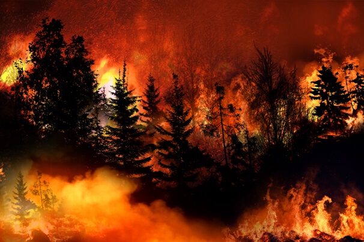

About Wildfires
Around the world, wildfires are a serious hazard to ecological systems, populations, and the environment. Individuals need to become involved in wildfire relief efforts as these devastating events become more common and severe as a result of the effects of climate change and other factors. While qualified professionals are largely responsible for fighting fires and preventing them, there are several ways that regular people may lessen the effects of wildfires while helping the areas that are impacted.
How You Can Help
The first step in providing assistance is to educate oneself about wildfire hazards, updates, and preventative measures. Spread important details on wildfire safety, evacuation protocols, and preventive measures via social media, neighborhood networks, or local venues. Encourage people to continue being watchful and organized.
Many organizations actively participate in attempts to combat wildfires, offering assistance to impacted areas, emergency responders, and wildlife. Giving these organizations your time, knowledge, or resources can have a big impact. Donations could come from distributing goods, helping out at evacuation shelters, or organizing fundraising activities.
Money contributions are needed for assisting with firefighting operations, helping displaced people, and speeding up the reconstruction and rehabilitation stages. Look into credible wildfire relief programs or groups that are actively involved in the destroyed areas, and think about contributing to their efforts with a gift.
Minimizing damage and saving lives can be achieved by taking preventative action to protect property from wildfires. Defensible area maintenance, the removal of flammable plant life, and the installation of fire-resistant features are practical measures to lower the danger of property damage. Tell your neighbors and fellow community members to follow along.
To control wildfires and protect communities, firefighters and first responders frequently put in long hours of labor in hazardous conditions. Express your gratitude, offer meals or drinks while battling fires, or plan events in the community to recognize their service as a way to thank them for their efforts.
Encourage policies and programs that address the root causes of wildfires, such as measures that reduce the effects of climate change, improvements to forest management, and the adoption of sustainable land-use practices. Communicate with politicians, take part in local discussions, and give your support to organizations which advocate environmental preservation and wildfire prevention strategies.